Son yazılar
91 yazı · sayfa 1/10
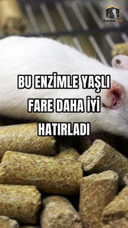
Yaşlı farelerde beyin enzimi artırılınca hafıza testinde iyileşme görüldü
16 aylık farelerde PLA2G2F enzimi beyne gen aktarımıyla artırıldı.
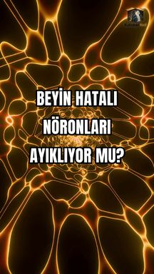
İnsan beyninde DNA kopya hataları taşıyan nöronların oranı doğumdan sonra düşüyo
Bağışlanmış insan beyinlerinde geniş DNA kopya değişikliği taşıyan nöron oranı doğum öncesi yüzde 25,9, sonrası yaklaşık yüzde 6 bulundu.
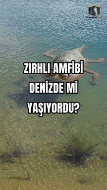
237 milyon yıllık zırhlı amfibi denizde yaşamış olabilir
Çin’de bulunan yaklaşık 237 milyon yıllık iki fosil, deniz ortamında yaşamış olabilecek zırhlı amfibi Gerrothorax maritimus’a ait.
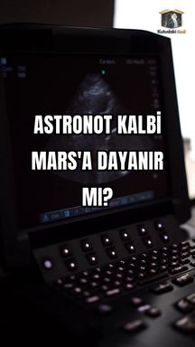
Altı aylık uzay uçuşundan dönen astronotların kalbi Mars yerçekiminde sınandı
Yaklaşık altı ay ISS’de kalan 13 astronotta kalp değişimleri ve Dünya’da Mars yerçekimi benzetimindeki dolaşım tepkisi incelendi.
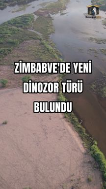
Zimbabwe'de 210 milyon yıllık yeni bir dinozor tanımlandı
Kariba Gölü yakınındaki kısmi iskelet, yaklaşık 210 milyon yıllık yeni bir dinozor türü Musango matusadonaensis olarak tanımlandı.
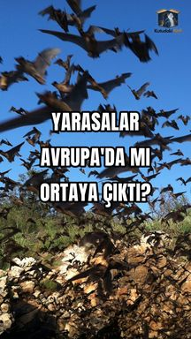
Yarasaların ortak atasının Avrupa'da yaşamış olması güçlü olasılık
103 yarasa genomu ve 44 fosil kaydına dayanan model, ortak atanın 65–60 milyon yıl önce Avrupa’da bulunmuş olabileceğini destekliyor.
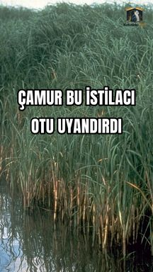
Çin kıyısında istilacı otun yayılmasını biriken çamur hızlandırıyor
Çin kıyılarında Spartina bataklık otunun gecikmeli yayılması, zamanla biriken tortuyla ilişkilendirildi.
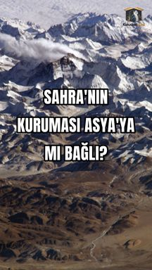
Himalayaların yükselişi Sahra'nın kurumasıyla bağlantılı olabilir
İklim benzetimleri Himalayaların yükselişiyle güçlenen Asya musonunun Kuzey Afrika’daki uzun süreli kuraklaşmayla bağlantılı olabileceğini gösterdi.
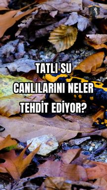
Tatlı su canlıları için 45 tehdidin dünya haritası çıkarıldı
21.490 tatlı su türü için 45 tehdit küresel haritada karşılaştırıldı.
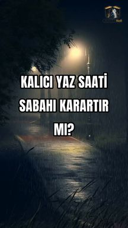
Kalıcı yaz saati çocukların karanlıkta okula gittiği sabahları artırabilir
ABD’de kalıcı yaz saati senaryosu, öğrencilerin karanlıkta okula gittiği yolculuk sayısını yılda iki milyardan fazla artırabilir.
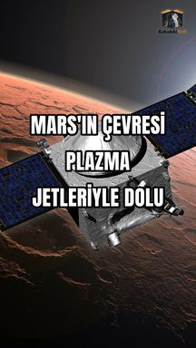
Mars'ın çevresindeki plazma jetleri beklenenden geniş alana yayılıyor
Mars çevresindeki 733 plazma jetinin dağılımı, Dünya’daki manyetik alan yönüne bağlı örüntüden farklı çıktı.
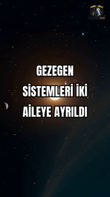
Çok gezegenli sistemler kütleye göre iki farklı davranış grubuna ayrıldı
298 çok gezegenli sistemin kütle ve yörüngelerine dayanan analiz, ağır ve hafif iki aileyle bunların dinamik farklarına işaret ediyor.
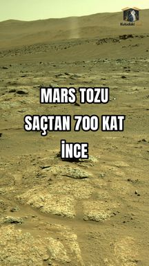
Mars'ta uzay giysisi malzemelerinde çok ince toz taneleri ölçüldü
Perseverance üzerindeki malzeme örneklerinde 100 nanometreye kadar küçülen Mars tozu tanecikleri tespit edildi.
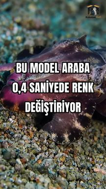
Model araba çevre desenini okuyup kamuflajını saniyenin altında değiştirdi
Mürekkep balıklarından esinlenen sistem 1/12 ölçekli model arabanın ekran desenini yaklaşık 0,4 saniyede çevreye uyarladı.
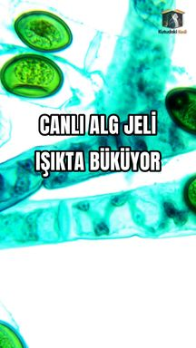
Canlı alglerle kaplı jel ışıkta bükülüp karanlıkta düzeldi
Canlı mikroalglerle kaplı yumuşak jel, fotosentezin değiştirdiği pH nedeniyle ışıkta bükülüp karanlıkta geri döndü.
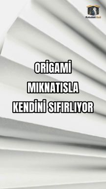
Manyetik origami modülleri sensör olmadan başlangıç konumuna döndürüldü
Dönen manyetik alan, Kresling tipi origami modüllerini bilinmeyen başlangıç durumundan ortak bir duruma taşıyabildi.
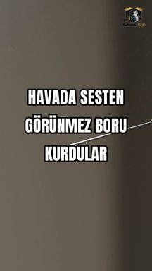
Ultrasesle havada duvarsız sekiz santimetrelik taşıma yolu oluşturuldu
256 ultrases kaynağıyla havada 8 cm uzunluğunda, değiştirilebilir bir taşıma alanı kuruldu.
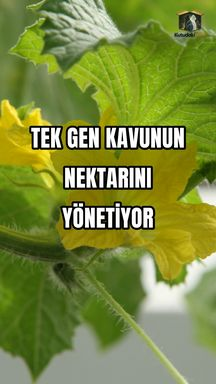
Kavunda tek bir gen nektarı ve tozlayıcı sinyallerini birlikte ayarlıyor
Kavunda YAB5 geni nektar bezinin oluşumunu, nektar metabolizmasını ve çiçeğin tozlayıcı çekme sinyallerini birlikte düzenliyor.
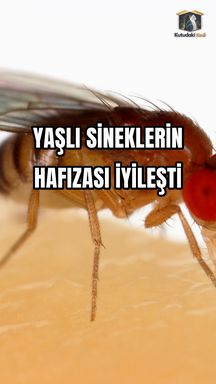
Meyve sineğinde yaşlanan hafıza proteini yeniden genç biçimine yönlendirildi
Meyve sineğinde Orb2’nin amiloid biçimi yaşla değişti.
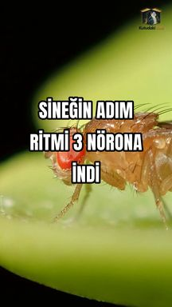
Meyve sineğinin yürüyüş ritmi simülasyonda üç nörona indirildi
Konektom temelli simülasyonda sineğin altı bacağı için ritim üreten en küçük çekirdek iki uyarıcı, bir baskılayıcı nörondan oluşuyordu.
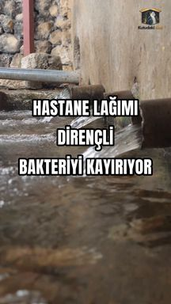
Hastane kanalizasyonunda dirençli bakterileri seçen kimyasal baskı bulundu
İsveç’te 10 hastanenin atık suyunda dirençli E. coli lehine seçilim gözlendi.
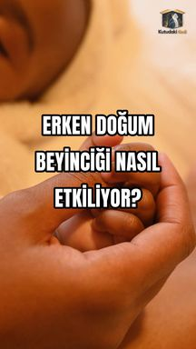
Erken doğum beynin hızlı geliştiği dönemde beyinciğin büyümesiyle ilişkili
Prematüre doğumun her erken haftası beyincik hacminde yaklaşık 230 mm³ farkla ilişkiliydi.
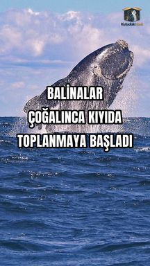
Güney balinaları çoğaldıkça kıyıda belli noktalarda toplanıyor
1976–2023 sayımlarında güney balinalarının sayısı artarken kıyıdaki dağılımı dağınıktan kümeli hale geldi.
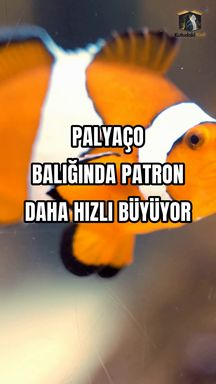
Palyaço balıkları sosyal sıraya göre farklı hızlarda büyüyor
Beş haftalık laboratuvar deneyinde baskın palyaço balıkları ortalama 4,3 mm, diğerleri 1,9 mm uzadı.
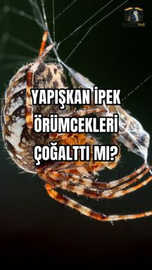
Örümceklerin çeşitlenmesi yapışkan ipek bezleriyle bağlantılı bulundu
Genom ve ipek proteinlerini birlikte karşılaştıran analiz, agrega bezinin varlığını daha yüksek çeşitlenme hızıyla ilişkilendirdi.
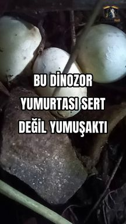
Jura döneminden dinozor yumurtası kabuğunun yumuşak olduğu anlaşıldı
İki embriyo arasındaki erken Jura kabuğunda kireçli tabaka toplamın en çok yüzde 41’iydi.
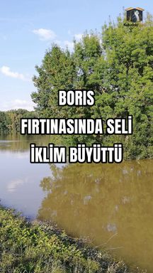
Boris fırtınasında iklimin sele etkisi yağıştan daha büyüktü
2024 Boris fırtınasını modelleyen çalışma, iklim etkisinin yağışta yüzde 6–9, sel zirvelerinde yüzde 14–22 düzeyinde olduğunu hesapladı.
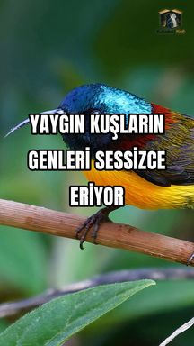
Yaygın görünen 62 ötücü kuş türünün genetik çeşitliliği azaldı
Gaoligong Dağları’nda tehlikede sayılmayan 62 ötücü kuş türünün tamamında 50 yıl içinde genetik çeşitlilik azaldı.
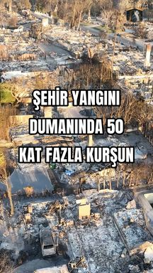
Los Angeles şehir yangınında dumanın kurşun içeriği çok yükseldi
Eaton yangınında ölçülen duman, karşılaştırılan bitki örtüsü yangınına göre 50 kattan fazla kurşun içeriyordu.
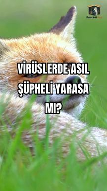
Memeli virüs taramasında insanla ilişkili virüslerde etoburlar öne çıktı
296 memeli türüne ait 4.685 metagenom veri kümesinin analizinde insanla ilişkili virüsleri taşıma eğiliminde etobur memeliler öne çıktı.
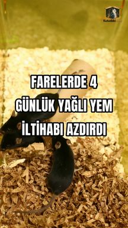
Farelerde dört günlük yağlı beslenme deri iltihabının gidişini değiştirdi
Erkek farelerde sedef benzeri iltihabın başındaki dört günlük yüksek yağlı yem, hastalığın şiddetini ve sonraki tekrarını etkiledi.
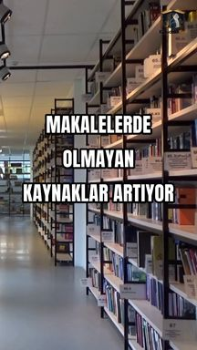
Bilimsel makalelerde var olmayan kaynaklar daha sık görülüyor
2023–2026 arasında 500 bin makalenin kaynakçası tarandı.
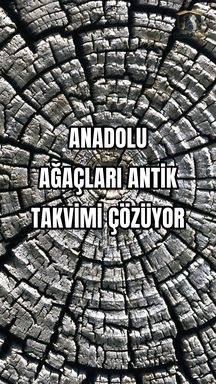
Anadolu ağaç halkaları Mezopotamya takvimini daralttı
Anadolu’daki ahşap kalıntılarının yıllık karbon-14 desenleri MÖ 2072–744 arasına sabitlendi.
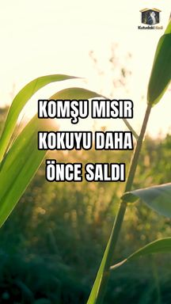
Zarar görmeyen mısır bitkisi savunma kokusunu önce saldı
Cam odadaki deneyde sağlam mısır bitkisi, savunma kokularını yaralı komşusundan 15–80 dakika önce saldı.
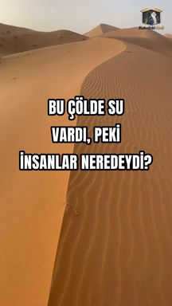
Yeşil Arabistan'da su vardı ama taş alet izi yoktu
Rub el Hali’de 125 noktanın 55’inde eski göl izleri görüldü; taranan hat boyunca taş alet bulunmadı.
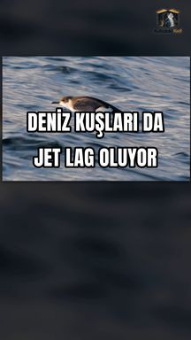
Atlantik yelkovanları uzun uçuşta güneş pusulasını şaşırabiliyor
20 yıllık GPS izleri, Manx yelkovanlarının doğuya dönüş uçuşlarında yaklaşık yedi derecelik güneş pusulası hatasıyla uyumlu sapmalar gösterdi.
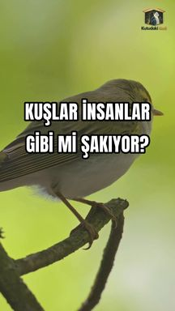
Kuş şakıması insan konuşmasıyla ortak ses düzenleri taşıyor
367 kuş türünün şakıması 52 insan diliyle karşılaştırıldı.
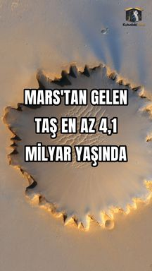
Sahra'da bulunan göktaşı Mars'ın en eski kabuğuna açılan pencere
Teghaza 001 göktaşının yaşı en az 4,1 milyar yıl.
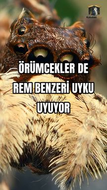
Zıplayan örümcekler uykularını REM benzeri evreyle telafi ediyor
Bir gecelik uyku bölünmesinden sonra zıplayan örümcekler REM benzeri evreye yaklaşık yüzde 80 daha fazla zaman ayırdı.
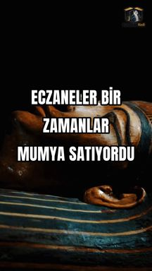
Mumya ilaçlarında aloe izleri ilk kez moleküllerle gösterildi
24 tarihsel nesnenin ikisinde aloe ile ilişkili moleküller saptandı.
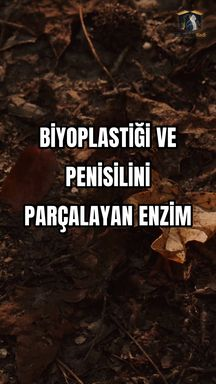
Aynı Enzim Biyoplastiği ve Penisilini Nasıl Parçalayabiliyor?
Toprak DNA'sından bulunan geniş oluklu bir enzim belirli biyoplastikleri ve beta laktam antibiyotikleri parçalayabiliyor.
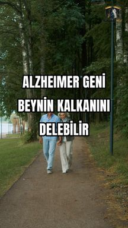
APOE4 Alzheimer Riskini Beyin Damarları Üzerinden Nasıl Artırabilir?
APOE4, damar çevresinde fibronektin birikimini artırıyor.
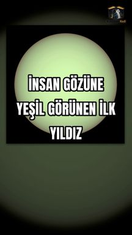
Bir Yıldız Gerçekten Yeşil Görünebilir mi?
Bir beyaz cücenin tayfı insan renk görmesiyle modellendiğinde soluk fıstık yeşili çıkıyor.
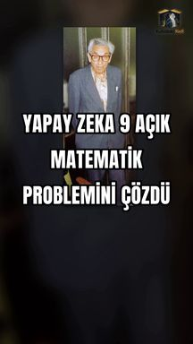
Yapay Zeka Açık Erdős Problemlerini Nasıl Doğrulanmış İspatlarla Çözdü?
DeepMind sistemi 353 açık Erdős probleminden 9'una bilgisayarla doğrulanmış ispat üretti.
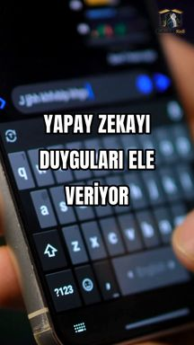
Yapay Zeka İnsan Gibi Yazmaya Ayarlansa Bile Neden Ayırt Ediliyor?
Dokuz açık model üç sosyal platformun kullanıcılarını taklit etti.
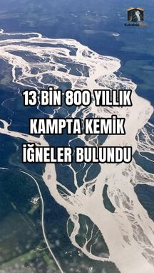
Alaska'daki 13.800 Yıllık Kamp İlk Amerikalıların Yaşamını Nasıl Gösteriyor?
Ocaklı barınak izi, toprak fırın, kemik iğneler ve on binlerce buluntu, Alaska'daki 13.800 yıllık bir ana kampın ayrıntılı görüntüsünü sunuyor.
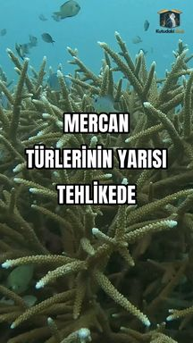
Resif Yapan Mercan Türlerinin Neredeyse Yarısı Neden Tehdit Altında?
Yeterli veri bulunan 774 resif mercanı türünün 340'ı IUCN Kırmızı Liste'de tehdit altındaki kategorilere girdi.
Kutudaki Kedi hakkında
Bu sitedeki yazılar ve videolar, bilimsel dergilerde ve araştırma kurumlarının kendi yayınlarında çıkmış çalışmalara dayanıyor. Her sayfanın altında kaynağın künyesi ve bağlantısı var; dilediğiniz an asıl makaleye gidip kendiniz okuyabilirsiniz.
Bilimsel makalelerin dili çoğu zaman ağırdır ve alan dışından birine kapalıdır. Biz bu dili gündelik Türkçeye indirirken yapay zekâdan yararlanıyoruz. Bu süreçte anlam kayması, fazla basitleştirme ya da yerini tam tutmayan bir benzetme ortaya çıkabilir. Amacımız bulguyu olduğundan büyük göstermek değil, merak uyandıracak kadar sadeleştirmek.
Bir içerikte hata olduğunu düşünüyorsanız bize yazın: kutudakikedistudio@gmail.com. Düzeltmeleri ciddiye alıyor, gerekirse sayfayı güncelliyoruz.
Hedefimiz popüler bilimin Türkiye'de ve dünyada yaygınlaşması, bilime duyulan ilginin ve güvenin artması.